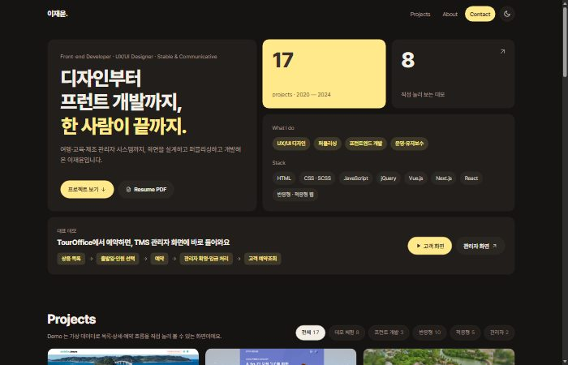
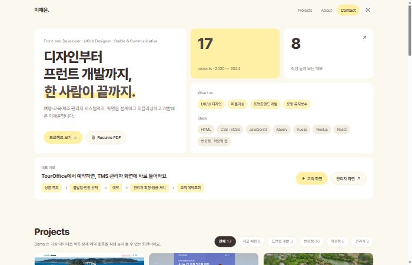
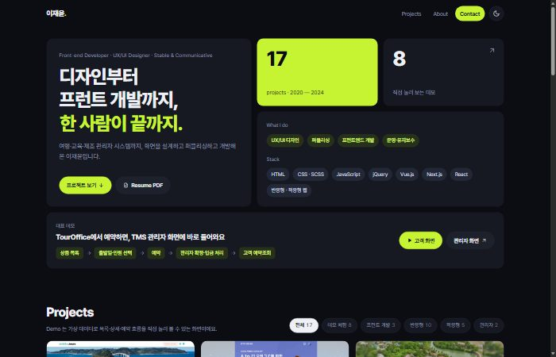
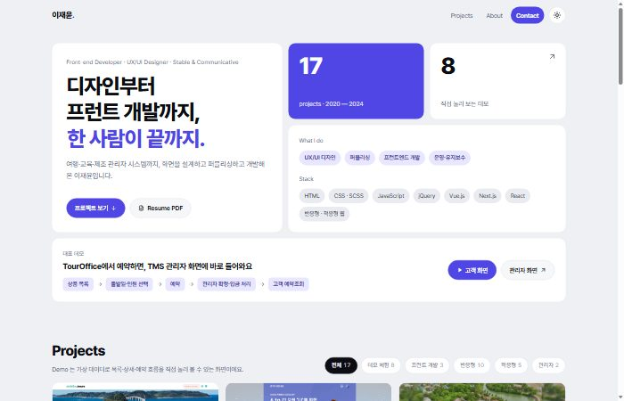
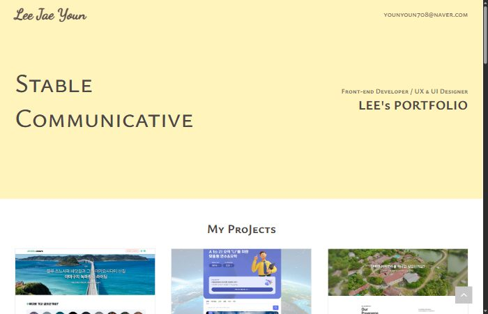
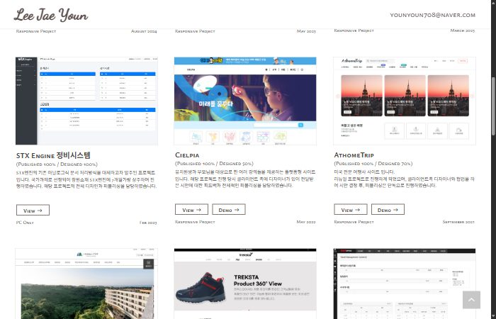

v3 · 2026.11지금 사용 중
벤토 — 버터 · 브라운
벤토 레이아웃에 예전 디자인의 버터 노랑과 브라운을 입힌 버전. 다크(차콜 + 버터)와 라이트(크림 + 브라운)를 오른쪽 위 버튼으로 전환해요.
포트폴리오 첫 화면의 지난 디자인을 그대로 열어 볼 수 있게 모아 둔 곳이에요. 프로젝트 데모 링크는 모두 지금 데모로 연결돼요.


벤토 레이아웃에 예전 디자인의 버터 노랑과 브라운을 입힌 버전. 다크(차콜 + 버터)와 라이트(크림 + 브라운)를 오른쪽 위 버튼으로 전환해요.




노란 히어로와 Ysabeau SC·Dancing Script 글꼴, 3열 카드의 처음 디자인. 카드에 Demo 버튼을 붙인 마지막 상태로 보관했어요.